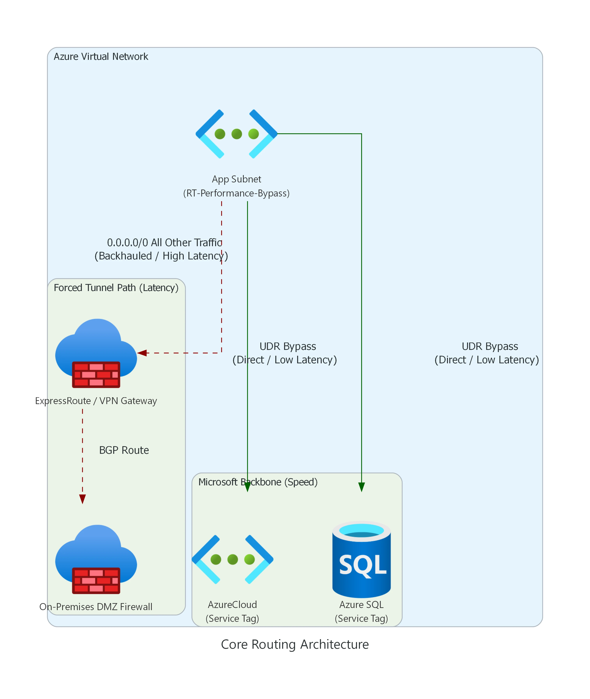
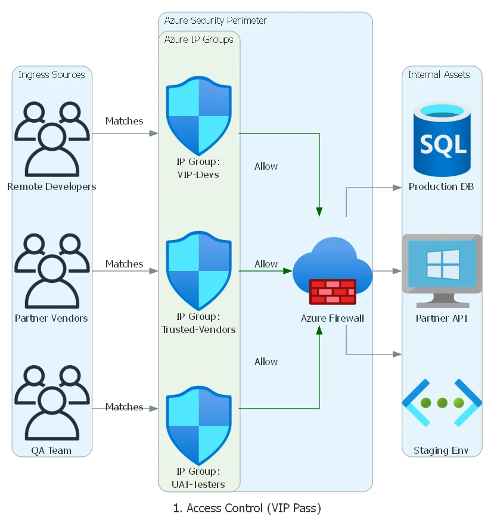
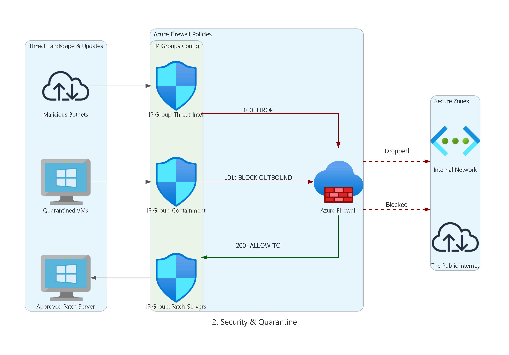
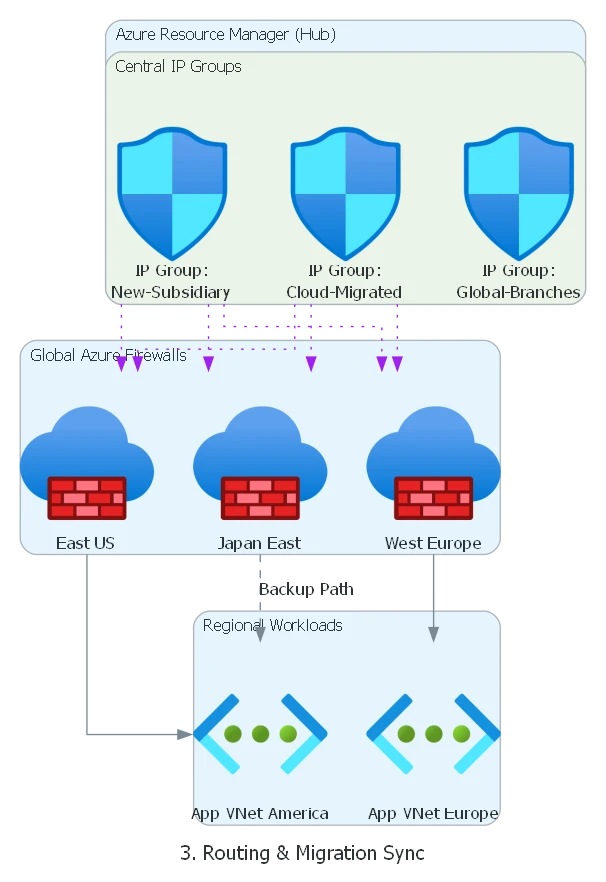

Executive Abstract
Forced Tunneling is often mandated as a "security default," but in cloud-native environments, it frequently introduces Asymmetric Routing and Management Plane Blindness. This article provides a Principal Architect's perspective on balancing the "Zero Trust" mandate with cloud operational integrity, specifically addressing the "Chicken-and-Egg" crisis of managed service updates.
Architectural Logic Flow
Fig 1: Principal Pattern - Decoupling Management and Data Planes for Forced Tunneling reliability.
The Compliance Trap
The mandate usually comes down from the CISO on a Friday afternoon: "All traffic must be inspected on-premises. No exceptions."
It sounds reasonable on paper. You want unified policy enforcement, deep packet inspection (DPI) in your
trusted DMZ, and a single pane of glass for auditing. So, you implement Forced Tunneling.
You inject a 0.0.0.0/0 route via BGP (Border Gateway Protocol) or UDR (User Defined Route) that
drags every single packet—from user requests
to Windows updates—back to your data center.
Then the alerts start firing: Windows VMs de-activating because they can't reach KMS (Key Management Service), firewalls losing threat intel, and client connections resetting due to DNAT (Destination Network Address Translation) failures despite "Allow" rules.
The CISO's mandate isn't wrong—they are trying to enforce Zero Trust. However, Forced Tunneling is a legacy data-center approach applied to a cloud-native problem. You didn't just route traffic; you broke the fundamental assumptions of the cloud. Here is how to implement Cloud-Native Zero Trust correctly.
Routing 101 For Forced Tunneling
Before fixing the architecture, you must understand the underlying mechanics that engineers actually need to know when diagnosing routing in Azure:
- Longest Prefix Match: Azure routes traffic based on the most specific prefix. A UDR for
10.0.0.0/24will always override a BGP route for10.0.0.0/16. - Effective Routes: What you see in the Route Table blade isn't always the truth. You must check "Effective Routes" on the network interface (NIC) to see the merged reality of UDRs, BGP, and System routes.
- Gateway Route Propagation: If "Propagate gateway routes" is set to Yes on a Route
Table, on-prem BGP routes are automatically injected. If disabled, only your manual UDRs apply.
Disabling this is a common tactic to isolate subnets (like the Application Gateway subnet) from
receiving the on-prem
0.0.0.0/0route and breaking inbound routing. - Asymmetric Routing: Traffic enters Azure via one path (e.g., direct via front-end Public IP) but attempts to leave via another (e.g., forced tunneled back to on-prem). Firewalls drop this stateful mismatch immediately.
The Selective Bypass Pattern
The baseline problem with Forced Tunneling is that on-prem advertises 0.0.0.0/0 over BGP, and
Azure dutifully backhauls everything—including traffic destined for native Azure PaaS services,
which kills performance and inflates ExpressRoute bandwidth.
The fix is the Selective Bypass Pattern. You use UDRs with Service Tags to send trusted Azure service traffic directly to the Azure backbone, while keeping unknown/internet traffic securely forced back to on-premises.

Fig: Azure Forced Tunneling (High Latency) vs Selective UDR Bypass (Low Latency).
The "VIP Fast Pass" Explained
Think of the App Subnet as a school full of students. Forced Tunneling is a strict rule
that says every single school bus must drive downtown to the Principal's Office (On-Prem
Firewall) before going anywhere.
If your class just wants to go to the playground right next door (Azure SQL) or the museum (AzureCloud),
driving all the way downtown through heavy traffic (ExpressRoute) is a huge waste of time.
So, network engineers hand out a VIP Fast Pass (UDR Bypass). If you are going to an
approved, safe place (Microsoft Backbone), you get a secret shortcut that skips the traffic and gets you
there instantly!
Here is how you actually build that VIP Fast Pass in Terraform using Service Tags (The Green Path):
resource "azurerm_route_table" "rt_fw_data" {
name = "rt-afw-data-001"
location = azurerm_resource_group.rg.location
resource_group_name = azurerm_resource_group.rg.name
# 1. The Strict Rule (Go to the Principal's Office)
route {
name = "Force-Tunnel-OnPrem"
address_prefix = "0.0.0.0/0"
next_hop_type = "VirtualAppliance"
next_hop_in_ip_address = var.on_prem_firewall_ip
}
# 2. THE VIP FAST PASS (Shortcut to Microsoft Services)
route {
name = "Allow-AzureCloud-Direct"
address_prefix = "AzureCloud"
next_hop_type = "Internet"
}
# 3. THE VIP FAST PASS (Shortcut to Database)
route {
name = "Allow-AzureSQL-Direct"
address_prefix = "Sql"
next_hop_type = "Internet"
}
}Example Route Table: RT-Performance-Bypass
| Route Name | Address Prefix (Destination) | Next Hop Type | Why? |
|---|---|---|---|
| Allow-Azure-Core | AzureCloud (Service Tag) |
Internet | Keeps Azure control plane and PaaS traffic on the Microsoft backbone. Extremely fast, bypasses on-prem inspection. |
| Bypass-Storage | Storage (Service Tag) |
Internet | Prevents massive blob storage backups from saturating the ExpressRoute circuit. Note: If data exfiltration is a concern, do not use a direct Internet bypass. Instead, use Private Endpoints or route through Azure Firewall using Service Tags with TLS Inspection. |
| Force-Tunnel-Default | 0.0.0.0/0 |
Virtual Network Gateway | Catches all remaining traffic and forces it to the on-prem inspection firewall. |
Warning: Service tags resolve to underlying IP prefixes, meaning they follow the longest prefix match rule against your BGP routes. Be cautious when overriding global tags with region-specific variants.
From Service Tags to IP Groups: The "Pizza Party" Analogy
In our diagram above, we used Service Tags (like AzureCloud and
Sql) to give a "Fast Pass" to Microsoft's own services. Service Tags are basically giant lists
of IP addresses that Microsoft manages for you automatically.
But what if you want a Fast Pass for a list of your own custom partner companies, your remote developers, or your 3 favorite branch offices? Microsoft doesn't make Service Tags for your personal friends! This is where Azure IP Groups come in.
The
Analogy: Imagine you are having a massive pizza party. To let your 100 friends into the
pizza parlor, you normally have to write a separate "Permission Slip" (a firewall rule) for every
single kid. If Jimmy moves to a new house (his IP changes), you have to dig through 100 slips,
find his old address, erase it, and write the new one. If you have multiple parlors (multiple
firewalls), you have to do this everywhere!
Azure IP Groups are like a "Group Chat". You create one shiny folder labeled "The
Pizza Party VIPs" and shove all 100 addresses inside it. Now, you only write ONE rule for the
firewall: "Allow anyone inside 'The Pizza Party VIPs' folder." If Jimmy moves, you update his
IP in the folder once, and every single firewall across your entire company updates instantly.
This "Group Chat" logic completely changes how enterprises structure cloud security. Here are the 3 major ways Azure IP Groups scale your Zero Trust architecture (complete with actual Azure Blueprint diagrams):
1. Access Control (The "VIP Pass" Directory)
Instead of writing dozens of fragile IP-based firewall rules for every vendor and remote team, the firewall simply reads central "Allow" folders.

Fig: Grouping Dynamic Remote Developers, Trusted Vendors, and QA Branches into logical Identity sets.
2. Security & Quarantine (The Threat Containment Zone)
During a security incident, time is everything. Security Engineers can instantly drop hacked VMs or known botnets into "Strict" IP Groups to instantly sever their connections, or lock down patch servers to a "Golden Whitelist."

Fig: Utilizing high-priority DROP rules tied to living Threat-Intel IP Groups.
3. Routing & Migration (The Global Synchronizer)
This highlights the true power of IP Groups at enterprise scale. When acquiring a new company or migrating massive datacenters over 6 months, you update the central "Cloud-Migrated" IP group in Azure Resource Manager (ARM), and it instantly syncs the new IP blocks across ALL your global firewalls synchronously.

Fig: A single ARM update cascading to East US, West Europe, and Japan East Firewall policies simultaneously.
1. The "Chicken-and-Egg" Crisis
Azure Firewall is a managed service that needs to talk to its control plane. When you force tunnel
0.0.0.0/0 to on-prem, you blind the firewall. It can't download the signature updates required
to inspect the traffic.
The Fix: Split the Planes
You must separate the Management Plane from the Data Plane. This is an absolute requirement for Forced Tunneling support.
- AzureFirewallSubnet: This is for your data. You can force tunnel this subnet.
- AzureFirewallManagementSubnet: This is for Microsoft control plane traffic. It must be named exactly this, it MUST be a /26 or larger, and it MUST have a direct route to the Internet.
By providing a dedicated AzureFirewallManagementSubnet, Azure automatically routes its
operational traffic (updates, metrics, backend management) directly out, ignoring your BGP forced tunnel.
Your customer data remains securely routed through the standard data subnet.
2. The Silent Connection Killer (DNAT & Asymmetric Routing)
UNSUPPORTED ARCHITECTURE: DNAT via Forced Tunneling
Azure Firewall DNAT is explicitly not supported when forced tunneling is enabled. Attempting to map a Public IP to an internal server via Azure Firewall while 0.0.0.0/0 points to on-prem will result in immediate asymmetric routing failures.
The Scenario: An internet client connects to your Azure Firewall Public IP. The firewall DNATs the traffic to your backend VM. The backend VM receives the packet, but its default route points to on-prem via the forced tunnel. The VM replies via the ExpressRoute. The client receives a reply from an unexpected IP (your on-prem gateway) or the firewall state table drops the connection.
The Supported Alternative
Instead of mapping Public IPs directly through the Azure Firewall in a forced tunnel environment, use an Application Delivery Controller that terminates the TCP session:
- Azure Application Gateway (WAF): Place the AppGW in a subnet with gateway route propagation disabled. It terminates the inbound internet connection and proxies a brand new connection to the backend VM, preserving path symmetry.
- Azure Front Door: For global HTTP/S load balancing, use Front Door coupled with Private Link to reach your backends securely without wrestling with DNAT limits on the firewall.
3. The KMS Activation Failure
You forced tunnel everything, and suddenly your new Windows VMs in Azure are reporting they aren't genuine. Why?
Windows Activation (KMS) requests must originate from recognized Azure Public IPs. When your VM reaches out to the KMS server via your on-prem corporate gateway (because you forced tunneled it), Microsoft's activation servers reject the unauthorized source IP.
The Fix: The Specific UDR
You must explicitly bypass the forced tunnel for the Azure Global Cloud KMS endpoints. Add these precise UDR exception routes to your subnets:
Destination: 20.118.99.224/32
Next Hop Type: Internet
Destination: 40.83.235.53/32
Next Hop Type: InternetEnsure your NSGs allow outbound TCP 1688 to these IPs. Note: If you are operating in sovereign clouds (Azure Government, Azure China), validate the specific KMS endpoints for your region, as they differ.
When NOT to Use Forced Tunneling
Forced Tunneling looks great to compliance teams, but it is not a silver bullet. You should actively advocate against it in these scenarios:
- PaaS-Heavy Workloads: If your architecture relies heavily on Azure SQL, Storage, Cosmos DB, and App Services, backhauling traffic to on-prem will obliterate latency budgets and skyrocket ExpressRoute data costs.
- High Egress Volume: Media streaming or massive data transfer out to the internet should not traverse expensive on-prem WAN links just to be inspected and dropped back to the internet.
- When Private Endpoints Solve the Root Cause: If the goal is simply "prevent internet access to databases," use Azure PrivateLink. Private Endpoints bring the PaaS service into your VNet natively, completely removing the need to ride the default 0.0.0.0/0 route.
- Better Fit - vWAN Secured Hub: If you are building a large-scale enterprise network, an Azure Virtual WAN with a Secured Virtual Hub (Azure Firewall integrated) manages routing intent natively, making manual UDR forced tunneling obsolete.
Senior Nuance: The Governance Shield
Architectural Debt Risk
A "Quick Fix" UDR bypass for KMS or Service Tags often evolves into architectural debt. Every manual entry is a potential break-point during VNet migrations. Recommendation: Centralize all bypass logic into a single hub-spoke Terraform module or Azure Policy to prevent "UDR Drift."
Egress Cost Governance
Forced Tunneling isn't just a security setting; it's a financial one. Data transfer charges (Egree) across ExpressRoute are significantly higher than native Internet breakout. Strategy: Perform a "Cloud-Exit Audit" to identify high-volume PaaS traffic (Storage/Data Lake) and move them to Private Endpoints immediately.
Troubleshooting Playbook
Keep this matrix handy when the red alerts start firing off.
| Symptom | What to Check | The Fix |
|---|---|---|
| Azure Firewall is unhealthy or fails to provision. | Check if the management subnet is named EXACTLY AzureFirewallManagementSubnet and
is at least /26. Check if a UDR is inadvertently forcing its traffic. |
Rename subnet, expand CIDR to /26, ensuring no 0.0.0.0/0 UDR is applied to the management subnet. |
| Windows VMs losing activation status. | Run Test-NetConnection -ComputerName 20.118.99.224 -Port 1688. Check Effective
Routes for KMS IPs. |
Add specific UDRs for the two Global KMS IPs (20.118.99.224/32, 40.83.235.53/32) pointing to
Internet.
|
| Inbound website traffic connects but hangs (Timeout). | Check if you are using Azure Firewall DNAT with forced tunneling. Capture traffic to see missing ACKs. | DNAT is unsupported. Move ingress to Application Gateway or Front Door to guarantee symmetric return paths. |
| PaaS calls (SQL/Storage) are painfully slow. | Check Effective Routes on the VM NIC. Verify if traffic is riding traversing the ExpressRoute to on-prem. | Implement the Selective Bypass Pattern using Service Tags (e.g., Storage ->
Internet).
|
| Unexpected Internet breakout (traffic ignoring the tunnel). | Check "Propagate gateway routes" setting on the Route Table. Check for overlapping longer-prefix UDRs. | Enable gateway route propagation if relying on BGP, or verify your UDR exact prefixes aren't too broad. |
Deployable Reference Architecture (V2 Updated)
I have published the complete, deployable Terraform module for this pattern. The codebase has been fully upgraded to reflect these strict management subnet and routing requirements.
View the Terraform code on GitHubVideo Vault (Must Watch)


Summary
Forced Tunneling is a powerful architectural pattern, but it is not a "toggle and forget" setting. It requires a deliberate redesign of your routing, management planes, and egress paths. Don't let "compliance" become code for "outage."